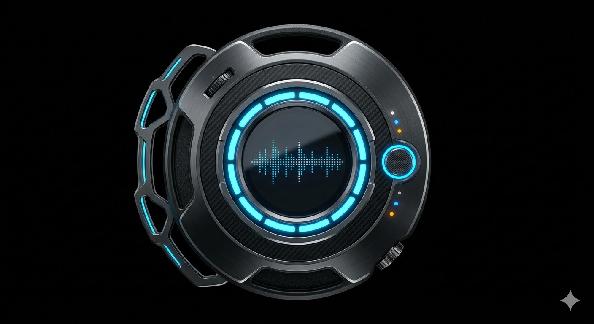
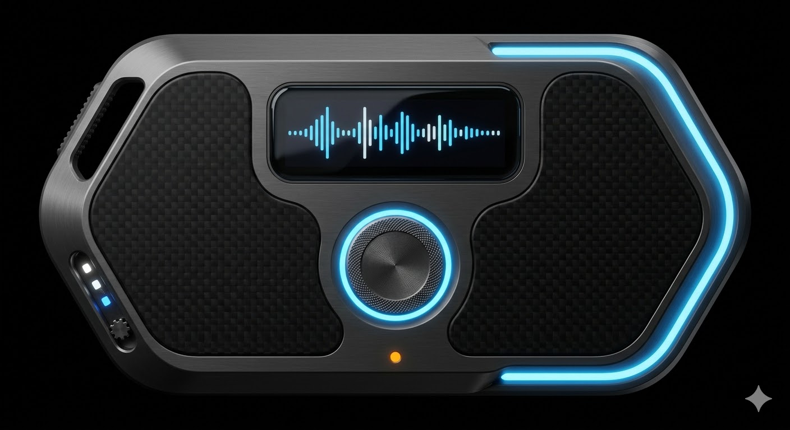
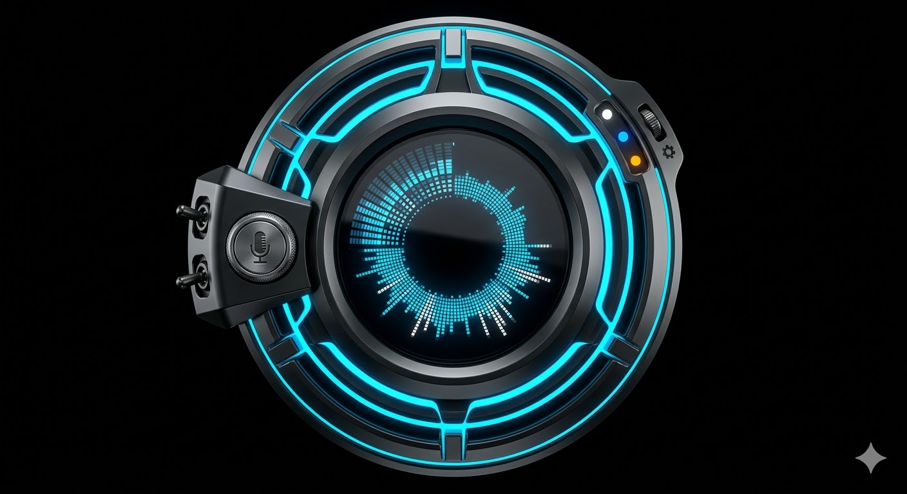
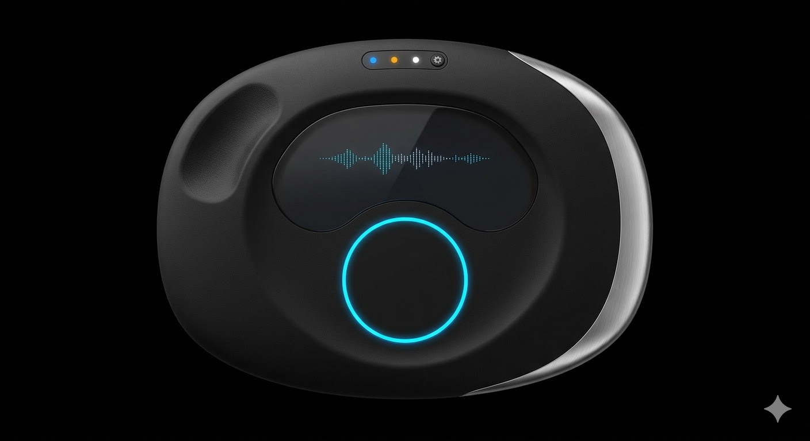
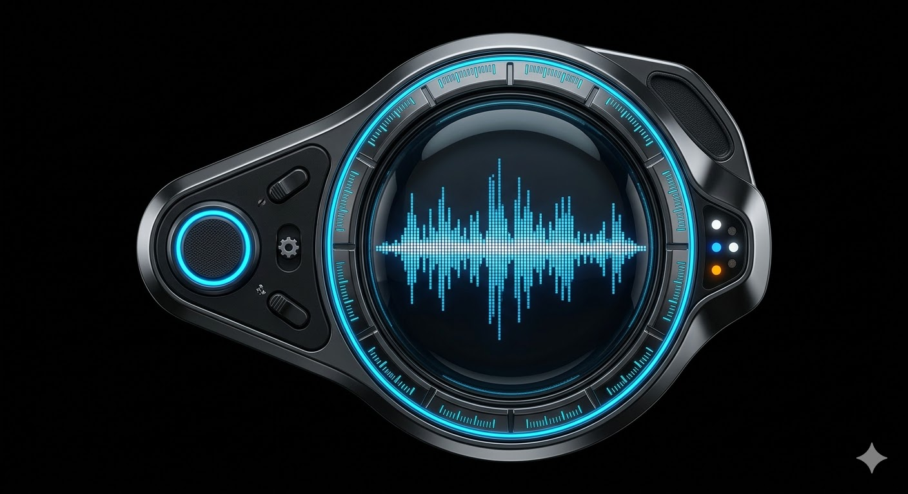

A skeuomorphic AI gadget for Linux that turns your voice into text — anywhere your cursor sits.
A borderless, custom-shaped floating gadget that lives on your Linux desktop. Press a hotkey, speak naturally, and your words appear wherever your cursor is — cleaned up, punctuated, and ready. No window chrome. No clunky UI. Just a gorgeous little control panel you drag around.
Global hotkey to start recording from any app. Hold-to-talk or toggle mode. Voice Activity Detection auto-stops when you pause.
Local Whisper models for privacy. Cloud APIs (Deepgram, Groq) for speed. LLM post-processing removes filler words and adds punctuation.
Text is injected at your active cursor position in any application. Works on both X11 and Wayland via clipboard simulation.
No window borders. Custom shape. Draggable. Always-on-top toggle. Feels like a physical device on your desktop, not a window.
<3MB binary, <30MB RAM idle. Sub-300ms transcription with cloud, <2s fully local. Starts instantly.
Default mode runs entirely local. Audio never leaves your machine unless you opt into cloud APIs. No telemetry.
Four-layer architecture: Web frontend for the custom gadget UI, Rust core for business logic, pluggable STT engine layer, and system integration for audio capture and text injection.
From microphone to cursor — the complete journey of your voice through Murmur's processing pipeline.
| Audio Capture | Rust cpal crate captures raw PCM at 16kHz mono from default PipeWire/PulseAudio source |
| VAD Gating | Silero VAD (1.8MB ONNX) processes 30ms chunks in <1ms. Gates audio to STT only when speech detected. Auto-stops after configurable silence (default: 1.5s) |
| STT Engine | Pluggable backend: whisper.cpp (default local), faster-whisper, or cloud (Deepgram/Groq). Model selected by user in settings |
| LLM Cleanup | Optional post-processing: remove filler words, add punctuation, fix grammar, format for context (email/code/chat). Local small LLM or cloud API |
| Text Injection | Save clipboard → copy text → simulate Ctrl+V via xdotool (X11) or ydotool (Wayland) → restore clipboard |
| Latency Budget |
Local path: ~50ms capture + ~1ms VAD + ~800ms STT (small model, CPU) + ~200ms LLM + ~50ms inject = ~1.1s total Cloud path: ~50ms capture + ~1ms VAD + ~200ms STT (Deepgram) + ~300ms LLM + ~50ms inject = ~600ms total |
Every choice optimized for one thing: the lightest, fastest, most polished voice gadget on Linux.
3MB binary, 30MB RAM. Rust backend + web frontend. Built-in .deb/AppImage bundling. Proven by OpenWhispr, Whispering, and more.
7KB runtime, fine-grained reactivity with no virtual DOM. Perfect for a real-time waveform + transcript UI. Tailwind for rapid custom styling.
Rust cpal crate for low-latency PCM capture via PipeWire/PulseAudio. Silero VAD (1.8MB ONNX) for speech detection in <1ms per chunk.
47.6k stars. Pure C++ with zero deps. Quantized models from 60MB (tiny) to 2.9GB (large). CPU + GPU support. Rust bindings via whisper-rs.
Deepgram: 5.26% WER, <300ms, streaming. Groq: 164x realtime Whisper. Both for users who want maximum speed over privacy.
Clipboard-based paste simulation. arboard crate for cross-platform clipboard. xdotool (X11) / ydotool (Wayland) for Ctrl+V simulation.
Cryptographic offline license validation. ECC-signed license files work without phoning home. Integrates with Paddle/LemonSqueezy for payments.
Primary: .deb for Ubuntu/Debian. Secondary: AppImage for universal Linux. Both built natively by Tauri's bundler. Optional Flatpak for discovery.
No polished, commercial-grade voice dictation app exists for Linux. That's the gap.
| Feature | Murmur | Wispr Flow | SuperWhisper | Whispering | Nerd Dictation |
|---|---|---|---|---|---|
| Linux Native | ★ FIRST | ✗ | ✗ | ✓ | ✓ |
| Custom Gadget UI | ✓ | ✓ | ✗ Menu bar | ✗ Standard | ✗ CLI only |
| Local Processing | ✓ | ✗ Cloud | ✓ | ✓ | ✓ |
| Cloud Option | ✓ | ✓ | ✗ | ✓ | ✗ |
| LLM Post-Processing | ✓ | ✓ | ✗ | ✗ | ✗ |
| Wayland Support | ✓ | — | — | ✗ Buggy | ✓ ydotool |
| Binary Size | ~3 MB | ~50 MB | ~80 MB | ~22 MB | ~1 MB |
| RAM Usage | ~30 MB | ~100 MB | ~200 MB | ~40 MB | ~20 MB |
| Real-time Waveform | ✓ | ✓ | ✗ | ✗ | ✗ |
| Voice Commands | ✓ v2 | ✓ | ✗ | ✗ | ✗ |
| Price | TBD | $144/yr | $249 lifetime | Free | Free |
| Platforms | Linux | Mac, Win, iOS | Mac | Mac, Win, Linux | Linux |
Five AI-generated skins for the gadget. No window borders. Custom shapes. Each one is a standalone floating panel you can drag around your desktop. All borderless, all skeuomorphic — inspired by classic Winamp and Windows Media Player skins, modernised with contemporary materials and lighting.

Circular design resembling a miniature arc reactor. Dark gunmetal and matte black housing with machined aluminium bevels. Central glowing ring with electric neon blue light emission. Waveform display behind tinted glass. Skeletal wing on one side doubles as a drag handle. Status LEDs embedded in the bezel.

Dog-tag shaped tactical communicator with brushed dark titanium frame and carbon fiber inlay panels. Horizontal waveform display in a rounded OLED-style panel. Large central mic button with cyan glow ring. Neon accent strip along the right edge. Three proximity-activated LED indicators near the settings gear that light up as your mouse approaches. Press-and-hold to record.

Circular design inspired by a jet engine intake viewed from the front. Concentric rings of dark brushed metal with deep channels. Circular waveform display in the centre with radial frequency bars. Neon blue light bleeding from between the ring segments. Mic button on the left wing, settings gear and status LEDs on the right. Feels like it was pulled from a spacecraft dashboard.

Organic pebble shape — like a river stone crossed with a premium remote control. Matte black soft-touch surface with one brushed aluminium accent edge. Concave central display zone for waveforms. Single large capacitive mic button with neon blue ring glow. Tiny status LEDs recessed into the top edge. Minimal, premium, tactile. No right angles anywhere.

Monocle shape with an angular control wing extension. Large circular main display behind curved glass showing audio waveform visualisation. Outer ring has segment markings like a watch bezel with neon blue illumination in the grooves. Mic button on the wing section with a pulsing LED. Dark chrome and matte black materials. The most detailed and characterful skin — strong WMP nostalgia modernised with contemporary materials.
Phased delivery. MVP ships fast with core dictation. V2 adds intelligence. V3 goes commercial. Skin system supports multiple switchable skins with dynamic accent recolouring.
Global hotkey activates recording. Hold or toggle. Visual feedback on the gadget shows recording state.
whisper.cpp with small model by default. Auto-downloads model on first run. GPU acceleration if available.
Clipboard-based text injection. Works in any application. Preserves and restores original clipboard contents.
Borderless, draggable, always-on-top. Custom shape with no window chrome. System tray icon.
Silero VAD auto-detects speech end. No manual stop needed. Configurable silence threshold.
Live audio visualization while recording. Visual confirmation that the mic is picking up your voice.
Deepgram Nova-3 and Groq Whisper as optional backends. BYOK (bring your own key) model.
AI cleanup: remove filler words, add punctuation, fix grammar. Context-aware formatting (email vs code vs chat).
"New line", "period", "select all", "undo" — spoken commands that map to actions instead of text.
Searchable log of all transcriptions. Copy any past result. Export to file.
Download, switch, and manage multiple Whisper models. Show size, accuracy, speed benchmarks for each.
User-defined terms that the STT should recognize. Boost accuracy for domain-specific vocabulary.
Keygen.sh integration for commercial distribution. Offline-capable cryptographic license validation.
Built-in update mechanism. Check for new versions, download, and apply seamlessly.
Full 99+ language support with auto-detection. Seamless code-switching for multilingual users.
Per-user voice profiles for improved accuracy. Custom vocabularies per profile.
Third-party STT engine plugins. Community-contributed post-processors and voice command packs.
Real-time text preview as you speak, not just final result. Progressive refinement.
Ship fast, iterate relentlessly. Three phases from working prototype to commercial product.
Known challenges and mitigation strategies.
Risk: GNOME blocks wtype and limits ydotool. Mitigation: Clipboard + ydotool Ctrl+V simulation. User guide for ydotool setup. XWayland fallback.
Risk: Different Ubuntu versions ship different WebKitGTK versions. Mitigation: Target Ubuntu 22.04+ (webkit2gtk-4.1). AppImage bundles deps for older distros.
Risk: GNOME limits global hotkey registration. Mitigation: XDG GlobalShortcuts portal where supported. Fallback to system shortcut configuration guide.
Risk: Large Whisper models too slow on CPU. Mitigation: Default to small/base model. Auto-detect GPU. Recommend cloud fallback for low-end hardware.